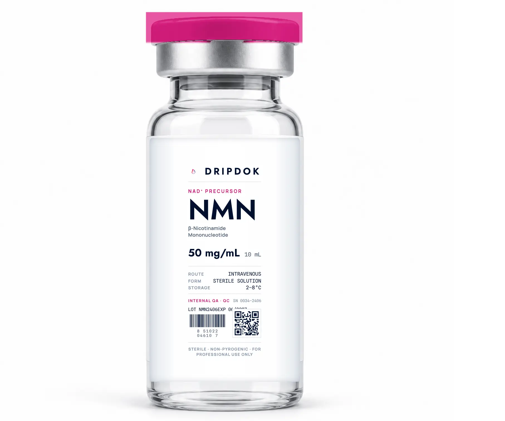
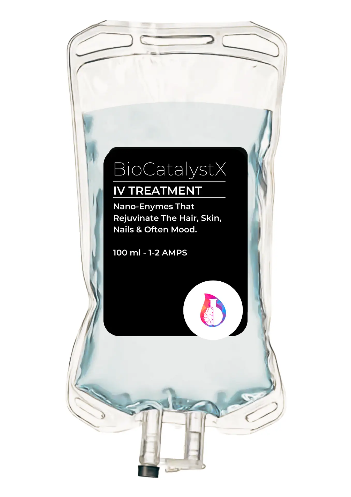

A structured, data-driven approach to longevity, recovery, and performance, built on real outcomes, not assumptions.
Not everyone needs this. We determine that together.

Every compound is physician-assembled fresh per session. Osmolality and pH verified. Sterility confirmed to USP 797. Not off-shelf bags.
Peptides at −80°C. Biologics at −196°C LN2. Lyophilised at −40°C. HPLC-verified at source. Full chain of custody documented.
Dr Anthony Close, BSc Analytical Chemistry, MSc Molecular Genetics. Direct physician oversight at every session. No nurse-only protocols.
Every protocol is derived from data: bloodwork, OAT, wearable HRV. Nothing is guessed. Intervention without insight is malpractice.
“In 2015 I suffered a severe cervical fracture and traumatic brain injury. Through regenerative therapies (exosomes, NMN, cerebrolysin, peptides) I returned to function. Recovery was not theoretical. It was lived. That experience is why every patient who enters this system receives the same level of analysis I applied to my own case.”
We do not sell IVs. We build longevity protocols based on data, outcomes, and individual biology. Those who have worked with Dr Close understand the level of detail, commitment, and follow-through that goes into every case.
Cellular energy restoration at the mitochondrial level. The most bioavailable NAD delivery system available, direct to circulation.
Foundation nutritional IV. Magnesium, B-complex, Vitamin C, Zinc, physician-calibrated to your deficiency profile.
Mitochondrial uncoupling, electron chain optimisation, and cognitive clarity. A precision metabolic and neuroprotective protocol.
Exosome-enhanced, peptide-amplified regenerative stacks for joint recovery, tissue repair, anti-ageing, and systemic renewal.
Physician-prescribed subcutaneous peptide systems. RP-34, TP-500, Tirzepatide, AOD-9604, with guided protocol and delivery training.
Next-generation regenerative biologics. Mesenchymal-derived exosomes for systemic cellular signalling and repair acceleration.
3, 6, or 12-month programs at 250mg, 500mg, or 750mg. Bi-weekly sessions. Compound the benefit, not the cost.
For NAD⁺, NMN IV, Myers IV, and ongoing programmes. Requires biomarker review and physician consultation before scheduling.
Begin with the physician intake form. Submit current bloodwork (or historical labs subject to review) and wearable data: HRV, sleep, activity trends.
Dr Close personally reviews your biomarkers, symptom history, and goals, then designs a tailored protocol: molecule, dose, frequency, stacking rationale.
Your protocol is delivered at your villa, hotel, or residence in Southeast Asia, subject to confirmed local availability. Tracking and iteration are built in.
What you are receiving, free of charge, would cost
if billed through a private longevity clinic in the United States.
Dr Close conducts these assessments, biomarker analyses, and full protocol designs out of personal passion, not commercial obligation. Capacity is finite.
Submitting does not guarantee acceptance.

Every protocol starts with your data. Apply, get personally reviewed by Dr Close, and we facilitate sourcing through certified partner facilities for delivery to your location.
Complete our biomarker and wearable-data intake application. Takes minutes, no clinic visit required.
Every application is reviewed personally within 24–48 hours. If accepted, we design a protocol matched to your data and confirm a delivery window.
Sourcing through ISO/USP-certified partner facilities, coordinated delivery to your villa, hotel, or residence in Southeast Asia, subject to confirmed local availability.
“I’ve been to IV clinics across Asia. This is the only one where a physician actually reviewed my bloodwork before touching a bag.”
“The regenerative IV stack post-surgery was transformative. Dr Close monitored every session personally.”
“Having a physician who explains the mechanism at a molecular level gives you complete confidence.”
Every compound administered at DRIPDOK is physician-assembled fresh per session, with HPLC-verified purity certificates available on request. Documentation on file.
Answers drawn from DRIPDOK's published process. For anything else, visit the Help Desk or ask our assistant.
We work with a limited number of patients who are serious about data-driven longevity and performance medicine. Not every applicant is accepted. The process determines fit, for both of us.
Requirements: Active wearable device · Bloodwork (recent preferred, historical considered) · Genuine commitment to the process